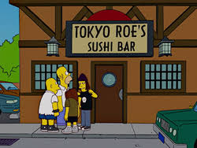
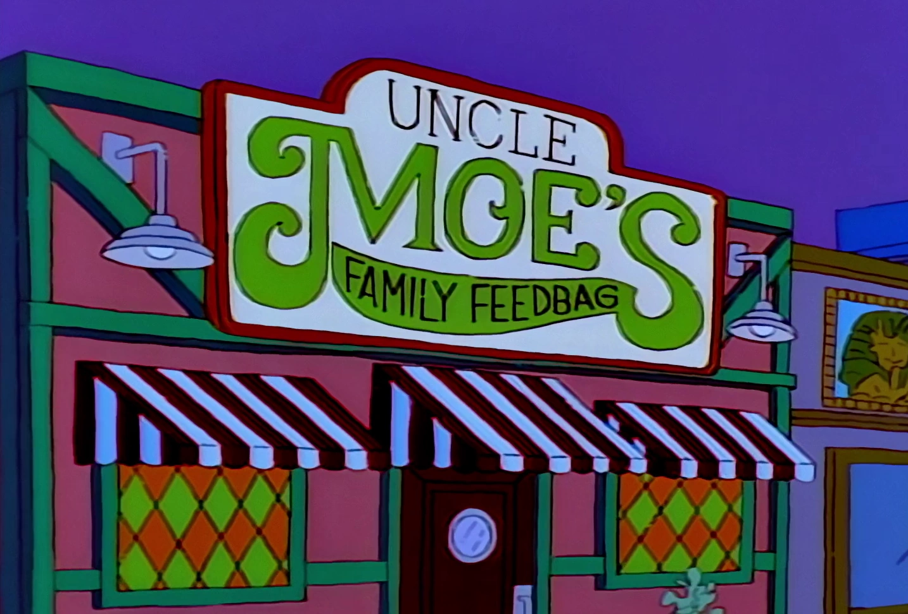
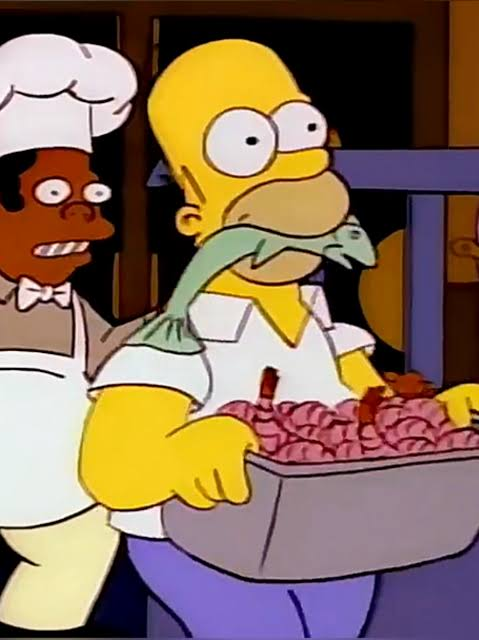
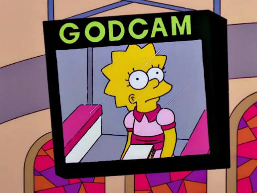
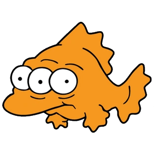
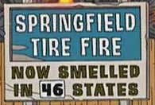

Lugares
En esta sección puede encontrar lugares para realizar distintas actividades como cenar, pasar una tarde en familia o conocer la ciudad.
Considere también
el siguiente botón para conocer un poco más la historia de esta pintoresca ciudad.
Gastronomía
Para los amantes de los platos gourmetes o tragos estos son algunos lugares que deberían visitar.
Dato curioso sobre Moe's
A pesar de haber iniciado como una taberna, como es también a día de hoy, el lugar fue cambiando de rubro múltiples veces, como por ejemplo un restaurante de sushi, o un restaurante familiar


Dato curioso sobre el Holandes Cocinante
El restaurante tenía una política de "Todo lo que pueda comer", hasta que el ciudadano Homero Simpson casi arruina el local.

Cultura y entretenimiento
Para la gente que le gusta la cultura general o pasar una tarde en familia estos son algunos lugares que deberían visitar.
Datos curiosos de la Iglesia
La iglesia estuvo 2 veces bajo el control del dueño de la planta nuclear de Springfield, Charles Montgomery Burns. La primera debido a que 2 ciudadanos (Homero y Bart Simpson) destruyeron la iglesia y el señor Burns se ofreció a repararla, debido a que el consejo de la iglesia no podía. La segunda también fue debido a falta de dinero y el señor Burns patrocinó la iglesia.
Acá se puede ver una "godcam" agregada luego de una de estas situaciones.

Dato curioso sobre Estudios Krustylu
Así como puede conocer a Krusty el payaso, también puede tener la posibilidad de conocer a Tomy y Daly, personajes de otro famoso programa de la ciudad.
Puntos de Interés
Estos son algunos puntos que deberían visitar si quieren conocer un poco más de esta hermosa ciudad.
Dato curioso sobre Planta Nuclear
Dentro de la planta se pueden observar animales curiosos, como ratas luminiscentes y peces de 3 ojos

Dato curioso sobre el vertedero
El olor de los neumáticos incendiados se puede percibir en 46 estados.
